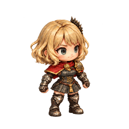

<!doctype html><html lang="ja"><meta charset="utf-8"><meta name="viewport" content="width=device-width,initial-scale=1"><title>enemyC：深層の敵7体</title>
<style>body{margin:0;background:#171922;color:#eee6d8;font:16px system-ui}main{max-width:1120px;margin:auto;padding:24px}h1{font-size:24px}p{line-height:1.7;color:#bfb9b0}.grid{display:grid;grid-template-columns:repeat(auto-fit,minmax(235px,1fr));gap:16px}.card{border:1px solid #514639;border-radius:12px;overflow:hidden;background:#20242e}.art{height:256px;background:repeating-conic-gradient(#30343e 0% 25%,#292d36 0% 50%) 0/24px 24px;display:flex;justify-content:center}.art img{width:256px;height:256px;object-fit:contain}.card h2{font-size:17px;margin:14px 16px}.small{height:128px;display:flex;justify-content:center;align-items:end;background:radial-gradient(ellipse at center,#656153,#30352e)}.small img{width:128px;height:128px}.links{margin:12px 16px;font-size:14px}a{color:#f6ce8a}label{display:block;margin:20px 0}body.light .art{background:#e6dfd2}</style>
<main><h1>enemyC：深層の敵7体</h1><p>右向き斜め前の基準絵。上段は256px、下段はラナとの縮小比較です。透過PNG／足元原点(128,224)。8方向・歩行・攻撃は今回の制作範囲に含みません。</p><label><input type="checkbox" id="bg"> 明るい背景で透過の縁を見る</label><div class="grid" id="grid"></div><p><a href="enemyC.png">透過シート</a> · <a href="manifest.json">画像情報</a></p></main>
<script>const names={ninja:'ニンジャ',caster:'まじゅつ師',mimic:'ミミック',summoner:'すず坊主',charged:'いかずち岩',cannon:'おおづつ兵',lord:'アビスロード'};for(const [key,name]of Object.entries(names)){const c=document.createElement('article');c.className='card';c.innerHTML=`<div class="art"></div><h2>${name}</h2><div class="small"></div><div class="links"><a href="art/${key}.png" download>透過PNG</a></div>`;grid.append(c);}bg.onchange=()=>document.body.classList.toggle('light',bg.checked);</script></html>
